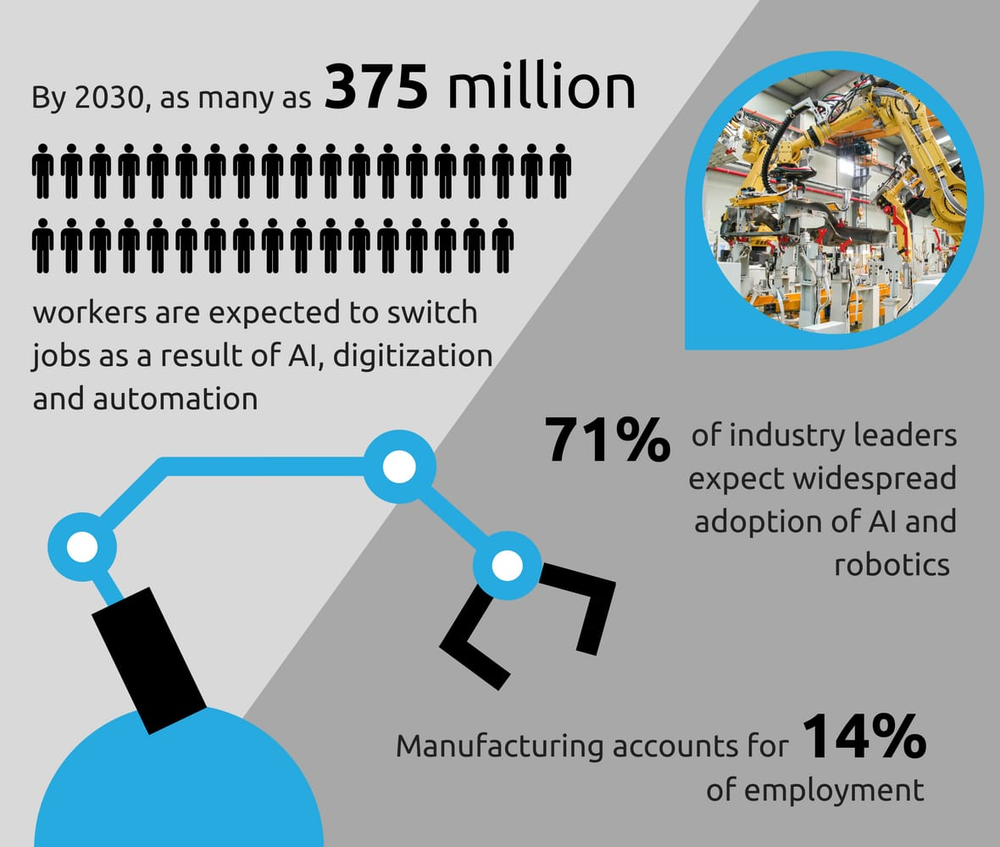

Literature Review
Artificial Intelligence is a department well known for taking place in multiple job sectors like
health science, business, and engineering. Artificial Intelligence and automation are the two
most wanted facilities for a variety of jobs. Several researchers have conducted research and wrote
resources like books and journal articles on artificial intelligence and its role in replacing
the human workforce.
Some researchers conducted studies and summarised that AI will replace the human
workforce. 30% of the world’s current human labour will be replaced by intelligent agents and
robots by 2030. This is because artificial intelligence and automation save up lots of time and
money and increase efficiency.
[8]
C. McClelland, "The Impact of Artificial Intelligence - Widespread Job Losses," 2020.
[Online]. Available:
https://www.iotforall.com/impact-of-artificial-intelligence-job-losses
[12]
A. Smith and J. Anderson, "AI, Robotics, and the Future of Jobs," Pew Research Center, vol. 6, p. 51, 2014.
In the presence of AI, companies will be able to fill up empty positions in a company easily by analysing incoming applications of job applicants and evaluating their skills, knowledge and experience to select the best worker among the applicants in a short period. In the future, people must be prepared for the loss of 99% of jobs due to
artificial intelligence.
[8]
C. McClelland, "The Impact of Artificial Intelligence - Widespread Job Losses," 2020. [Online]. Available:
https://www.iotforall.com/impact-of-artificial-intelligence-job-losses
On the other hand, researchers conducted studies and concluded that AI will not
replace the human workforce in some job fields due to specific reasons depending on the field.
Artificial intelligence will not replace interventional radiologists because it is dangerous.
Radiologists will handle some tasks which machines are unable to do, such as decision making.
[15]
F. Pesapane, et al, "Myths and facts about artificial intelligence: why machine-and
deep-learning will not replace interventional radiologists," Medical Oncology (Northwood,
London, England), vol. 37, no. 5, p. 40, 2020.
[16]
K. E. Karches, "Against the iDoctor: why artificial intelligence should not replace
physician judgment," Theoretical Medicine and Bioethics, vol. 39, no. 2, pp. 91-110, 2018.
K. E. Karches mentioned that experts in the medical field have argued to go against the
incorporation of artificial intelligence in medical care. This is because it will bring up the
possibility of “iDoctor”, which will replace all the physicians around the world. Machines will not
be able to create an understanding between patients and doctors.
[16]
K. E. Karches, "Against the iDoctor: why artificial intelligence should not replace
physician
judgment," Theoretical Medicine and Bioethics, vol. 39, no. 2, pp. 91-110, 2018.

However, there are researchers who concluded that artificial intelligence will not
replace the human workforce, instead, they will work together to form a better future.
This is because AI has a certain specialisation that humans do not have while humans have
specialisations and talents which AI and automation will never be able to execute successfully.
[17]
M. H. Jarrahi, "Artificial intelligence and the future of work: Human-AI symbiosis in
organizational decision making," Business Horizons, vol. 61, no. 4, pp. 577-586, 2018.
[18]
T. Livne, "Why AI and Humans Are Stronger Together Than Apart," 2019. [Online]. Available:
https://www.entrepreneur.com/article/329099
Therefore, they should work together to achieve their objective in a short time and simple way. For
instance,
voice transcription space has a voice-to-text technology which plays a major role for the people
with
hearing and speaking inability.
However, it is not reliable because accent, speed, dictation,
tone of speech, and background noise may affect the transcription. So, the most effective way is to
use the AI facility, then approach the humans for help to verify accuracy and fix any errors.
Based on the literature review, artificial intelligence equally brings harm and good, but it
depends on the job field involved. Different job field has different ways of doing tasks. For
example, the medical field requires human workforce for better understanding between doctors and
patients. IT fields require more time and energy-saving techniques to complete the given tasks
shortly and easily.